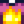

Spicy Eel
| Spicy Eel | ||||||||||
| It's really spicy! Be careful. | ||||||||||
| Information | ||||||||||
| Source | Cooking Desert Trader | |||||||||
| Buff(s) | ||||||||||
| Buff Duration | ||||||||||
| Energy / Health |
|
|||||||||
| Sell Price |
| |||||||||
| ||||||||||
| Recipe | ||||||||||
| Recipe Source(s) |
| |||||||||
| Ingredients | ||||||||||
Spicy Eel is a cooked dish. It is prepared using either the kitchen inside an upgraded farmhouse or a Cookout Kit.
Note: This recipe is profitable - it will result in profit when using the lowest quality ingredients.
Spicy Eel can be purchased from the Desert Trader in exchange for 1 Ruby. It may also randomly appear in Krobus' shop on Saturdays or in the Stardrop Saloon's rotating stock. Spicy Eel can be dropped by a Serpent in the Skull Cavern (6% chance). A Lava Eel Fish Pond may also produce five Spicy Eel when the population of the pond is at least 9 (3-4% chance). One Spicy Eel may be found when opening a Mystery Box. It is also sold by the Calico Egg Merchant in the Desert Festival for  10 Calico Eggs. 5 Spicy Eel can be obtained as a prize from the Prize Machine.
10 Calico Eggs. 5 Spicy Eel can be obtained as a prize from the Prize Machine.
Gifting
| Villager Reactions
| |
|---|---|
| Love | |
| Like | |
| Dislike | |
| Hate | |
Bundles
Spicy Eel is not used in any bundles.
Recipes
Spicy Eel is not used in any recipes.
Tailoring
Spicy Eel is used in the spool of the Sewing Machine to create the Flames Shirt.  It can also be used as a red dye in the dye pots, located at Emily's and Haley's house, 2 Willow Lane.
Quests
Spicy Eel is not used in any quests.
History
- 1.4: Added to Desert Trader's stock. Can now be used in Tailoring. Can be produced by Fish Ponds.
- 1.5: Can now be prepared using a Cookout Kit.
- 1.6: Can now be found when opening Mystery Boxes and purchased from Gus at the Desert Festival. Can now be obtained as a prize from the Prize Machine.